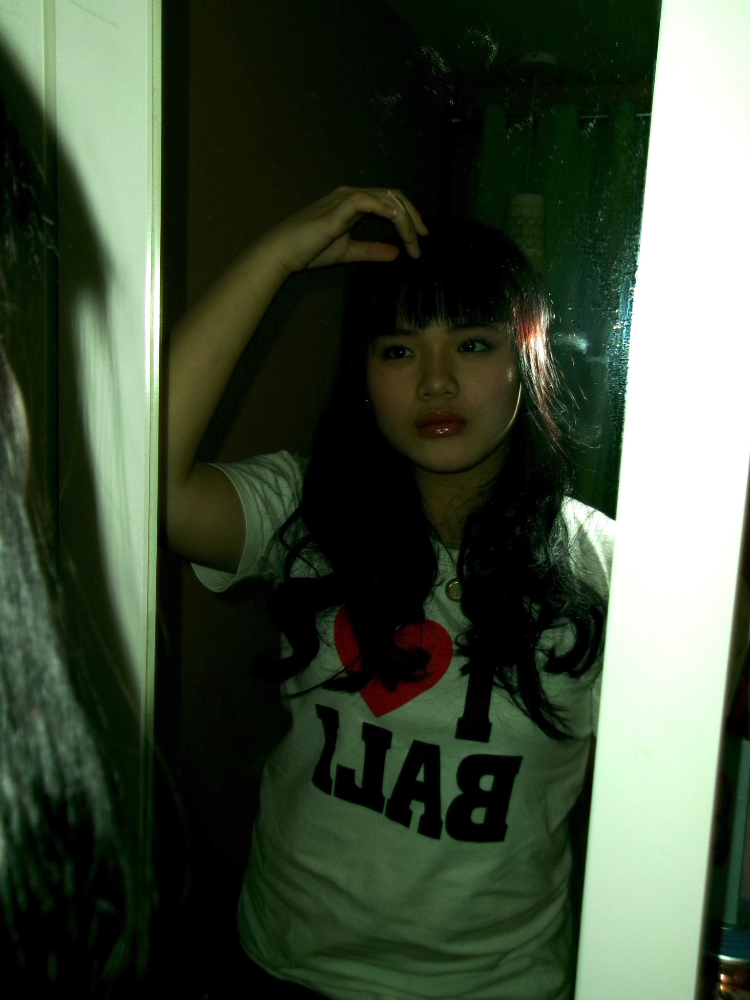

My interests
I'm interested in watching shows and anime, especially Paradise Kiss, Haikyuu!!, and Death Note. I enjoy the shows' vibes, the stories, and the lessons they teach.

Maggie Chiong
10 Sapphire
I'm interested in watching shows and anime, especially Paradise Kiss, Haikyuu!!, and Death Note. I enjoy the shows' vibes, the stories, and the lessons they teach.
During my free time, I enjoy watching shows and cooking. These are some of the things I like doing whenever I want to relax or try something different.
In the future, I hope to graduate, have a successful career, and travel to different places. I want to experience more things and make the most out of life.
"You only live once."